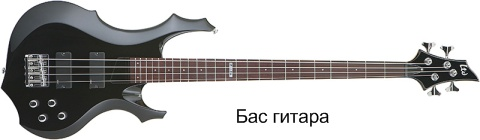

Бас-гитара
Ну и конечно же я не мог не упомянуть о бас гитаре. Всё началось с потребности в более громком басовом инструменте, возникшей ещё в 20-е года, когда на сценах бушевал джаз. В оркестрах проблема решалась количеством – четыре контрабасиста играли одну и ту же мелодию, в джазовых же коллективах контрабас было почти не слышно. В 1935 году человеком по имени Пол Татмарк (Paul Tutmarc) была создана первая бас-гитара, которую при игре держали горизонтально, а не вертикально. Называлась она Model #736 Electric Bass Fiddle. У гитары были несомненные плюсы – её было легче транспортировать, на ней было легче играть, и её было лучше слышно.

Бас гитара отличается от остальных длинным грифом и меньшим в отличии от остальных гитар числом струн (обычно четыре), также струны толще чем у обычной электрогитары. Они используются, прежде всего, для придания глубины и насыщения звуковой гаммы музыкального произведения. Поэтому представить современную рок-группу без бас гитары не предоставляется возможным.